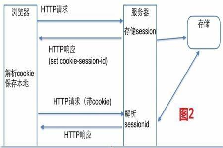
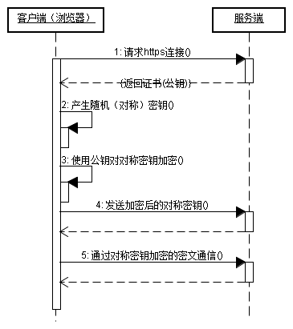

《光辉岁月》是中国香港摇滚乐队Beyond演唱的一首歌曲，由黄家驹作曲并为歌曲的粤语版填词，普通话版则由何启弘、周治平填词。该曲的粤语、普通话版分别收录在Beyond于1990年9月发行的粤语专辑《命运派对》以及1991年4月发行的普通话专辑《光辉岁月》中。该曲是黄家驹为南非黑人领袖曼德拉创作的一首作品。
一、会话机制
- 引入：HTTP协议本身是无状态的,不支持服务端保存客户端的状态信息。当客户端(浏览器)发送请求给服务端(服务器)的时候，服务器正常响应；当同一个浏览器再次发送请求到服务器的时候，服务器还是会响应，但它不知道就是刚才那个浏览器。为了识别不同的请求是否来自同一客户端，引入了HTTP会话机制，即：多次HTTP连接间维护服务器与同一客户端发出的不同请求之间关联的情况称为维护一个会话,通过会话管理对会话进行创建、信息存储、关闭等。

实现
cookie：一种在客户端记录用户信息的技术
- 工作原理：浏览器发起一次请求到服务器，如果需要记录该用户状态，服务器就会在响应头中通过设置
set-cookie:name=tom字段生成cookie信息返回到浏览器，浏览器会把这些信息保存下来。当浏览器再请求该网站时会读取本地的cookie信息，把cookie信息通过在请求头设置cookie:name=tom字段发送到服务器，服务器验证cookie信息并响应。 - cookie的内容
- cookie 名：
$_COOKIE['name'] = 'value'中的name - cookie 值：
$_COOKIE['name'] = 'value'中的value - 过期时间：若不设置，此时
cookie生命期为浏览器会话期间，关闭浏览器窗口cookie消失,被称为会话cookie，一般存储在内存里；若设置则浏览器会把cookie保存到硬盘上，关闭后再次打开浏览器cookie仍然有效直到超过设定的过期时间，被称为持久化cookie。 - 所属域名：告诉浏览器当前要添加的
cookie的域名归属，无明确指出默认当前域名 - 生效路径：告诉浏览器当前要添加的
cookie的路径归属，无明确指出默认当前路径
- cookie 名：
- 作用域
1
21.当前域名或父域名下的 cookie
2.当前路径或父路径下的 cookie- 工作原理：浏览器发起一次请求到服务器，如果需要记录该用户状态，服务器就会在响应头中通过设置
session：一种在服务端记录用户信息的技术
- 工作原理：当程序需要为某个客户端的请求创建一个
session的时候，服务器首先检查这个客户端的请求里是否已包含了一个session标识–称为session_id，如果已包含一个session_id则说明以前已经为此客户端创建过session，服务器就按照session_id把这个session检索出来使用(如果检索不到可能会新建一个)，如果客户端请求不包含session_id，则为此客户端创建一个session并且生成一个与此session相关联的session_id，session_id的值是一个既不会重复又不容易被找到规律以仿造的字符串，这个session_id将被在本次响应中返回给客户端保存。保存这个session_id的方式可以采用cookie，一般这个cookie的名字都是类似于SEEESIONID,这样在交互过程中浏览器可以自动的按照规则把这个标识发挥给服务器。 - session共享
- 基于NFS的
Session共享：NFS是Net FileSystem的简称，最早由Sun公司为解决Unix网络主机间的目录共享而研发。这个方案实现最为简单，无需做过多的二次开发，仅需将共享目录服务器mount到各频道服务器的本地session目录即可，缺点是NFS依托于复杂的安全机制和文件系统，因此并发效率不高，尤其对于session这类高并发读写的小文件，会由于共享目录服务器的io-wait过高，最终拖累前端WEB应用程序的执行效率。 - 基于数据库的
Session共享：首选当然是大名鼎鼎的MySQL数据库，并且建议使用内存表Heap，提高session操作的读写效率。这个方案的实用性比较强，相信大家普遍在使用，它的缺点在于session的并发读写能力取决于MyMSQL数据库的性能，同时需要自己实现session淘汰逻辑，以便定时从数据表中更新、删除session记录，当并发过高时容易出现表锁，虽然我们可以选择行级锁的表引擎，但不得不否认使用数据库存储session还是有些杀鸡用牛刀的架势。 - 基于Cookie的Session共享：这个方案我们可能比较陌生，但它在大型网站中还是比较普遍被使用。原理是将全站用户的
session信息加密、序列化后以cookie的方式，统一种植在根域名下（如：.host.com），利用浏览器访问该根域名下的所有二级域名站点时，会传递与之域名对应的所有cookie内容的特性，从而实现用户Cookie化session在多服务间的共享访问。此方案的优点是无需额外的服务器资源，缺点是由于受http协议头信息长度的限制，仅能够存储小部分的用户信息，同时cookie化的session内容需要进行安全加解密（如：采用DES、RSA等进行明文加解密；再由MD5、SHA-1等算法进行防伪认证），另外它也会占用一定的带宽资源，因为浏览器会在请求当前域名下任何资源时将本地cookie附加在http头中传递到服务器。 - 基于
memcache/redis的Session共享：memcache由于是一款基于Libevent多路异步I/O技术的内存共享系统，简单的key + value数据存储模式使得代码逻辑小巧高效，因此在并发处理能力上占据了绝对优势。还有就是memcache的内存hash表所特有的expires数据过期淘汰机制，正好和session的过期机制不谋而合，降低了过期session数据删除的代码复杂度。
- 基于NFS的
- 工作原理：当程序需要为某个客户端的请求创建一个
session和cookie的区别
- cookie数据存放在客户的浏览器上，session数据放在服务器上
- cookie不安全，可以分析存放在本地的cookie并进行cookie欺骗
- session保存在服务器上，当访问增多会比较占用服务器的资源
- 单个cookie保存的数据不能超过4K，很多浏览器都限制一个站点最多保存20个cookie
- 一般将账号密码等重要信息存放为session，其他信息如需要保留则放在cookie中
二、请求响应
引入
HTTP(hypertext transport protocol)，即超文本传输协议，其详细规定了浏览器和万维网服务器之间互相通信的规则，该规则规定了客户端发送给服务器的内容格式–请求协议，也规定了服务器发送给客户端的内容格式–响应协议。- 标准HTTP协议分为请求和响应两部分，header是Http的实体首部字段，用于说明请求或返回的消息主体是用何种方式编码。
请求
协议格式
请求行：包含请求方法、URI、HTTP协议版本三部分
请求方法
HTTP1.0定义了三种请求方法：GET,POST和HEAD方法。
HTTP1.1新增了五种请求方法：OPTIONS,PUT,DELETE,TRACE和CONNECT方法。
序号 方法 描述 1 GET 请求指定的页面信息，并返回实体主体。 2 HEAD 类似于get请求，只不过返回的响应中没有具体的内容，用于获取报头。 3 POST 向指定资源提交数据进行处理请求，数据被包含在请求体中，可能会导致新的资源的建立和/或已有资源的修改。 4 PUT 从客户端向服务器传送的数据取代指定的文档的内容。 5 DELETE 请求服务器删除指定的页面。 6 CONNECT HTTP/1.1协议中预留给能够将连接改为管道方式的代理服务器。 7 OPTIONS 允许客户端查看服务器的性能。 8 TRACE 回显服务器收到的请求，主要用于测试或诊断。
请求头：包含着客户端此次请求的具体信息
空行
请求体：GET请求无请求体，POST有
响应
请求协议格式
响应行：包含HTTP协议版本、状态码、原因短语
- HTTP状态码分类
分类 分类描述 1** 信息，服务器收到请求，需要请求者继续执行操作 2** 成功，操作被成功接收并处理 3** 重定向，需要进一步的操作以完成请求 4** 客户端错误，请求包含语法错误或无法完成请求 5** 服务器错误，服务器在处理请求的过程中发生了错误 - HTTP常见状态码列表
状态码 状态码英文名称 中文描述 100 Continue 继续，客户端应继续其请求 200 OK 请求成功，一般用于GET与POST请求 301 Moved Permanently 永久移动 302 Found 临时移动 304 Not Modified 未修改 305 Use Proxy 使用代理。所请求的资源必须通过代理访问 307 Temporary Redirect 临时重定向。与302类似。使用GET请求重定向 400 Bad Request 客户端请求的语法错误，服务器无法理解 401 Unauthorized 请求要求用户的身份认证 403 Forbidden 服务器理解请求客户端的请求，但是拒绝执行此请求 404 Not Found 服务器无法根据客户端的请求找到资源（网页） 405 Method Not Allowed 客户端请求中的方法被禁止 500 Internal Server Error 服务器内部错误，无法完成请求 501 Not Implemented 服务器不支持请求的功能，无法完成请求 502 Bad Gateway 作为网关或者代理工作的服务器尝试执行请求时，从远程服务器接收到了一个无效的响应 503 Service Unavailable 由于超载或系统维护，服务器暂时的无法处理客户端的请求。延时的长度可包含在服务器的Retry-After头信息中 504 Gateway Time-out 充当网关或代理的服务器，未及时从远端服务器获取请求 505 HTTP Version not supported 服务器不支持请求的HTTP协议的版本，无法完成处理 响应头：服务器返回给客户端的具体信息，如此次响应的时间、返回的文件长度、文件类型等
- 常见
- application/x-www-form-urlencoded：浏览器的原生form表单，提交的数据按照
key1=val1&key2=val2的方式进行编码，key和val都进行了URL转码 - multipart/form-data：使用表单上传文件时，
form的enctype的值必须为multipart/form-data - application/json：消息主体是序列化后的
JSON字符串 - text/xml：一种使用
HTTP作为传输协议，XML作为编码方式的远程调用规范 - text/html：HTML格式
- application/x-www-form-urlencoded：浏览器的原生form表单，提交的数据按照
- 其他
- text/plain：纯文本格式
- image/gif：gif图片格式
- image/jpeg：jpg图片格式
- image/png：png图片格式
- application/xhtml+xml：XHTML格式
- application/xml：XML数据格式
- application/atom+xml：Atom XML聚合格式
- application/json：JSON数据格式
- application/pdf：pdf格式
- application/msword：Word文档格式
- application/octet-stream： 二进制流数据（如常见的文件下载）
- 常见
空行
响应体：服务器返回给客户端的文件、数据等
三、https
- https：以安全为目标的HTTP通道，即HTTP下加入SSL层。
- SSL，全称
Secure Socket Layer，即安全套接字层，为Netscape所研发，用以保障在Internet上数据传输之安全，利用数据加密技术可确保数据在网络上之传输过程中不会被截取，当前版本为3.0。它已被广泛地用于Web浏览器与服务器之间的身份认证和加密数据传输。SSL协议位于TCP/IP协议与各种应用层协议之间，为数据通讯提供安全支持。SSL协议可分为两层：- SSL记录协议(SSL Record Protocol)：它建立在可靠的传输协议(如TCP)之上，为高层协议提供数据封装、压缩、加密等基本功能的支持。
- SSL握手协议(SSL Handshake Protocol)：它建立在SSL记录协议之上，用于在实际的数据传输开始前，通讯双方进行身份认证、协商加密算法、交换加密密钥等。
- TLS，全称
Transport Layer Security，传输层安全协议，用于两个应用程序之间提供保密性和数据完整性。TLS 1.0是IETF制定的一种新的协议，它建立在SSL3.0协议规范之上，是SSL3.0的后续版本，可以理解为SSL3.1，它是写入了RFC的。该协议由两层组成：- TLS 记录协议(TLS Record)
- TLS 握手协议(TLS Handshake)
- SSL，全称
SSL/TLS协议提供的服务主要有：A.认证用户和服务器，确保数据发送到正确的客户机和服务器；B.加密数据以防止数据中途被窃取；C.维护数据的完整性，确保数据在传输过程中不被改变。
与之类似的有一个SSH，全称
Secure Shell，它是建立在应用层基础上的安全协议，专为远程登录会话和其他网络服务提供安全性的协议。
HTTPS协议的作用
- 建立一个信息安全通道，来保证数据传输的安全
- 确认网站的真实性
客户端在使用HTTPS方式与Web服务器通信时有以下几个步骤，如下图所示：

- ①客户使用https的URL访问Web服务器，要求与Web服务器建立SSL连接。
- ②Web服务器收到客户端请求后，会将网站的证书信息（证书中包含公钥）传送一份给客户端。
- ③客户端的浏览器与Web服务器开始协商SSL连接的安全等级，也就是信息加密的等级。
- ④客户端的浏览器根据双方同意的安全等级，建立会话密钥，然后利用网站的公钥将会话密钥加密，并传送给网站。
- ⑤Web服务器利用自己的私钥解密出会话密钥。
- ⑥Web服务器利用会话密钥加密与客户端之间的通信。
http和https对比
- https协议需要ca申请证书。
- http是超文本传输协议，信息是明文传输，https则是具有安全性的ssl加密传输协议。
- http和https使用的是完全不同的连接方式，用的端口也不一样，前者是80，后者是443。
- http的连接很简单，是无状态的；HTTPS协议是由SSL+HTTP协议构建的可进行加密传输、身份认证的网络协议，比http协议安全。